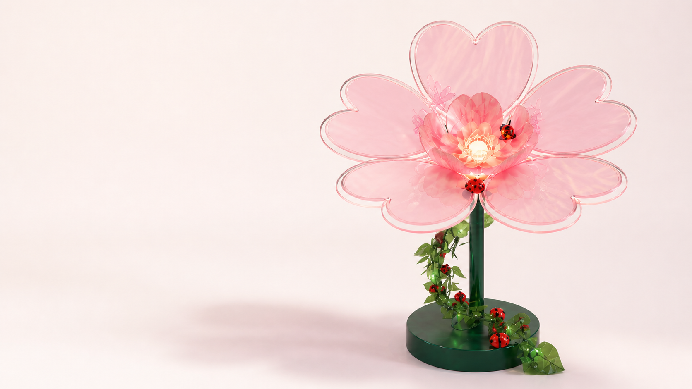

Clean energy
Solar-powered, renewable electricity gathered in the landscape.

Bio-inspired photovoltaic installation
Where photovoltaics grow like plants in the city — harvesting clean energy by day and transforming it into an interactive light experience at night.
Solar Flower reimagines energy infrastructure as a living part of public space.
Breaking from conventional, visually monotonous solar arrays, the installation brings together photovoltaic generation, botanical form and responsive illumination. Invisible energy becomes visible, tangible and emotional.
Solar-powered, renewable electricity gathered in the landscape.
Dynamic LED lighting makes energy generation perceptible.
Presence sensing creates a responsive, shared experience.
An aesthetic and functional alternative to conventional planting.
The system collects solar energy, monitors photovoltaic data, stores electricity and supplies power to responsive lighting.
Capture natural sunlight
Convert light into electricity
Track generation, voltage & irradiance
Store energy for lighting
Supply power and control lighting effects
Automatic night mode
High generation produces high brightness; medium or low generation adjusts output automatically, while insufficient power activates energy-saving mode.
Human presence mode
Dim when quiet. A gentle breathing effect welcomes an approaching visitor, rising to full brightness nearby before fading and restoring on departure.
Flower-inspired engineering
Heart-shaped colored transparent crystalline-silicon petals sit within a durable layered assembly, supported by a stainless steel bracket and base. Light, sensors and cabling are integrated into the sculptural form.
Monocrystalline silicon
Color point-dispersion coating
Approx. 1.2m wide
Low-power mosquito repellent
“Not simply power generation, but a new paradigm where technology, landscape and human experience coexist.”
Modular, scalable and weather-resistant, Solar Flower can enrich diverse urban contexts while encouraging public awareness of clean energy.
Enhance nighttime visibility and create an interactive atmosphere.
Improve spatial quality, attract foot traffic and create an interactive experience.
Beautify the environment, improve nighttime visibility and enhance residents’ wellbeing.
Reliable, low-carbon illumination woven naturally into the city.